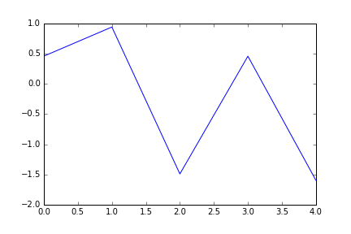

Created on Fri Apr 8 11:30:07 2016
@author: enrico
can be executed with:
!python3.5 ../../pmn.py test_figures.py
data = [1, 2, 3, 4, 5, 6] with open('my_output_file.txt', 'w') as outputfile: print(data, file=outputfile)
[1, 2, 3, 4, 5, 6]
import pylab as plt fig, ax = plt.subplots() ax.plot(plt.randn(5)) fig.savefig("./my_image.png") fig.savefig("./my_image.svg")
Images can be included as PNG
Or they can be included as svg
permette di esportare la figura direttamente come html.
from bokeh.plotting import figure from bokeh.resources import CDN from bokeh.embed import file_html from bokeh.embed import components plot = figure() x = [1, 2, 3, 4, 5] y = [6, 7, 2, 4, 5] plot.line(x, y, legend="Temp.", line_width=2) html = file_html(plot, INLINE) with open("./bokeh_plot.html", "w") as bokeh_file: print(html, file=bokeh_file)
I can also take a matplotlib figure and convert it directly to a bokeh plot saving it then to an html file
from bokeh.mpl import to_bokeh plt_fig, ax = plt.subplots() ax.plot(plt.randn(5), plt.randn(5)) with open("./bokeh_matplotlib_plot.html", "w") as bokeh_file: bokeh_fig = to_bokeh(plt_fig) html = file_html(bokeh_fig, CDN) print(html, file=bokeh_file)
from bokeh.models.widgets import Panel, Tabs from bokeh.plotting import figure p1 = figure(plot_width=300, plot_height=300) p1.circle([1, 2, 3, 4, 5], [6, 7, 2, 4, 5], size=20, color="navy", alpha=0.5) tab1 = Panel(child=p1, title="circle") p2 = figure(plot_width=300, plot_height=300) p2.line([1, 2, 3, 4, 5], [6, 7, 2, 4, 5], line_width=3, color="navy", alpha=0.5) tab2 = Panel(child=p2, title="line") tabs = Tabs(tabs=[ tab1, tab2 ]) with open("./bokeh_interactive_plot.html", "w") as bokeh_file: html = file_html(tabs, CDN) print(html, file=bokeh_file)
Warning
In case multiple bokehinteractive graphs should be included in the same notebook, there could be problems, as each one of them try to import the javascript again and this lead to only the last one being shown. To avoid this problem you need to insert the following one without the external machinery used my file_html, using components instead. The line is slightly different, but there is no code overhead in doing that.
The other downside of bokeh is that the code will require a working internet connection, unless the bokeh javascript is statically downloaded and linked.
from bokeh.models import ColumnDataSource from bokeh.plotting import gridplot x = list(range(-20, 21)) y0 = [abs(xx) for xx in x] y1 = [xx**2 for xx in x] # create a column data source for the plots to share source = ColumnDataSource(data=dict(x=x, y0=y0, y1=y1)) TOOLS = "box_select,lasso_select,help" # create a new plot and add a renderer left = figure(tools=TOOLS, width=300, height=300) left.circle('x', 'y0', source=source) # create another new plot and add a renderer right = figure(tools=TOOLS, width=300, height=300) right.circle('x', 'y1', source=source) linked_plot = gridplot([[left, right]])
with open("./bokeh_interactive_plot_linked.html", "w") as bokeh_file: script, div = components(linked_plot) print(script, div, file=bokeh_file)
import pandas as pd data = pd.DataFrame(plt.randn(4, 4), index=['Italy', 'France', 'England', 'Spain'], columns=['Cats', 'Dogs', 'Rabbits', 'Giraffes']) with open('pandas_html_view.html', 'w') as pandas_view: print(data.to_html(), file=pandas_view)
| Cats | Dogs | Rabbits | Giraffes | |
|---|---|---|---|---|
| Italy | 2.108856 | -0.984506 | 0.841934 | -0.613327 |
| France | -1.164397 | 0.188427 | 1.961644 | -0.455670 |
| England | -0.598977 | -1.910729 | -0.575863 | -1.006622 |
| Spain | -0.044606 | 1.977112 | 0.047885 | -0.541597 |
We could also include ad-hoc decoration by including a piece of css in the html file that contains the pandas representation! (alonside all the possibilities given by the base function).
by default the style will be applied to the whole file; if you want to apply a css only to a specif section, you can include the whole thing in a div with a specific name, and prefix all the rules of the css with the name of that div.
with open('pandas_html_view_decorated.html', 'w') as pandas_view: # taking the css from # http://blog.henryhhammond.com/pandas-formatting-snippets/ print(""" <style> <!-- .decoratedtable1 .dataframe * {border-color: #c0c0c0 !important;} .decoratedtable1 .dataframe th{background: #eee;} .decoratedtable1 .dataframe td{background: #fff; text-align: right; min-width:5em;} --> </style> """, file=pandas_view) print("<div class='decoratedtable1'>\n", file=pandas_view) print(data.to_html(), file=pandas_view) print("</div>\n", file=pandas_view)
| Cats | Dogs | Rabbits | Giraffes | |
|---|---|---|---|---|
| Italy | 2.108856 | -0.984506 | 0.841934 | -0.613327 |
| France | -1.164397 | 0.188427 | 1.961644 | -0.455670 |
| England | -0.598977 | -1.910729 | -0.575863 | -1.006622 |
| Spain | -0.044606 | 1.977112 | 0.047885 | -0.541597 |
at the end of the script you can attach this couple of lines (using the name of your file and the correct location of pmn.py) to make sure that everytime you run the code anew, the html is updated in a single command.
import subprocess subprocess.call(["python3.5", "../../pmn.py", "test_figures.py"])